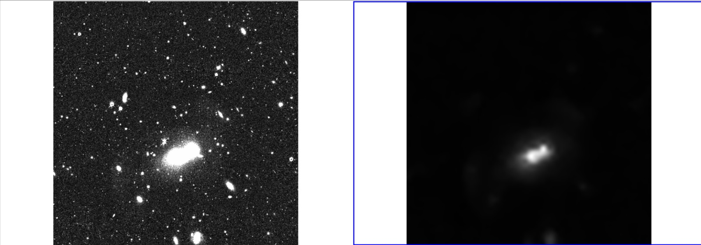
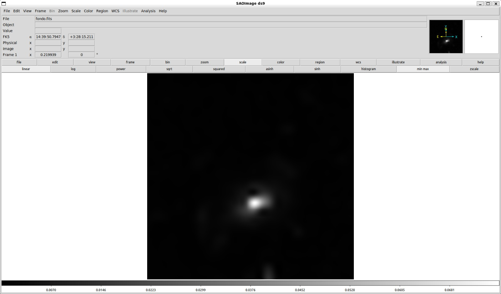

Análisis con SExtractor
SExtractor es una herramienta para el análisis de imágenes astronómicas, crea un catálogo de objetos a partir de estas imágenes. Este software puede procesar imágenes de gran tamaño y manejar una gran variedad de magnitudes de objetos.
En general, para hacer uso de SExtractor, se siguien los siguientes pasos:
- Identificar y medir el nivel de fondo (Background).
- Aplicar un umbral a la imagen respecto al fondo.
- Localizar y separar fuentes que aparecen por encima del umbral.
- Producir un catálogo de fuentes y sus propiedades medidas.

Instalación
Para instalar SExtractor desde el paquete fuente de GitHub , primero se tiene que descomprimir el archivo. En el nuevo directorio ejecutamos el comando:
$ sh autogen.shEsto crea un archivo de configuración que se utiliza para compilar SExtractor. Ahora ejecutamos el comando:
$ ./configureFinalmente, ejecutamos el comando:
$ makePara comprobar que el software se ha instalado correctamente escribimos en la terminal:
$ sexEsto devolverá información básica sobre SExtractor. Para más detalles sobre la instalación se pueden consultar las siguientes fuentes:
Para usar SExtractor se necesita una imagen en formato FITS. Se puede descargar una imagen de ejemplo desde el siguiente enlace .
La imagen que utilizaremos tendrá el nombre de
IMAGEN.fits.

Creamos un nuevo directorio donde estará nuestra imagen y copiamos
los cuatro archivos default desde la carpeta de origen
descargada desde GitHub.

Archivos principales de configuración
-
default.sexes el corazón de SExtractor. Contiene los parámetros globales del análisis; aquí se define el nivel de detección, el nombre del catálogo de salida y otros parámetros importantes. -
default.paramcontiene la lista de parámetros que SExtractor medirá durante el análisis. SExtractor posee muchas propiedades observacionales disponibles. -
default.convcontiene el filtro de convolución utilizado para mejorar la detección de objetos. -
default.nnwcorresponde al archivo de red neuronal utilizado para la clasificación estrella-galaxia.


Parámetros de entrada.
SExtractor obtiene información del encabezado de la imagen FITS, sin embargo, muchos de los parámetros se deben ser especificados en el archivo default.sex. Los parámetros que están por defecto pueden ser listados con el comando sex -d
Información de la imagen.
-
GAIN: Representa la ganancia del detector, es decir, la relación entre los electrones generados en el CCD y las cuentas digitales ADU almacenadas en la imagen. Se expresa en $$\text{GAIN}=\frac{\text{electrones}}{\text{ADU}}$$ -
MAG_GAMMA: Este parámetro se empleaba cuando SExtractor se aplicaba a placas fotográficas en donde esta es la pendiente de la función de respuesta de la emulsión utilizada en las placas en cuestión. -
DETECT_TYPE: Especifica el tipo de imagen que se va a analizar, puede serCCDoPHOTO, dependiendo del tipo de imagen que se tenga, se deben ajustar otros parámetros como elGAINy elMAG_GAMMA. -
MAG_ZEROPOINT: Es el punto cero para la escala de magnitudes, que se utiliza para convertir las cuentas en magnitudes absolutas. -
PIXEL_SCALE: Es la escala del pixel en arcsegundos por pixel, que se utiliza para convertir las coordenadas de los objetos en unidades de ángulo, es decir, que tanto del cielo hay en un pixel. Este es un parámetro importante para la clasificación estrella-galaxia, y que con suerte se puede obtener del encabezado de la imagen. -
SATUR_LEVEL: Es el nivel de saturación del detector, que se utiliza para identificar objetos saturados en la imagen. Este valor también se puede obtener del encabezado de la imagen. -
SEEING_FWHM: Representa el Full Width at Half Maximum expresado en segundos de arco. Este parámetro constituye una de las calibraciones iniciales del análisis, ya que proporciona a SExtractor una estimación del tamaño aparente de las fuentes puntuales en la imagen. Este valor es utilizado principalmente en la clasificación estrella-galaxia mediante el parámetroCLASS_STAR.
Físicamente el seeing describe cuanto se ensanchan las imágenes de las estrellas debido principalmente a la turbulencia atmosférica. Si una estrella fuera una funente puntual perfecta, la atmósfera y la óptica del telescopio la transformarían en una distribución extendida de luz. Esta distrinución se le conoce como la función de dispersión puntal (point spread function, PSF), la cual describe cómo un punto luminoso ideal es registrado por el sistema de observación, en muchos casos la PSF puede aproximarse a una distribución gaussiana. El parámetroFWHMmide el ancho de esta distribución a la mitad de su intensidad máxima.
Determinación del fondo (Background).
En una imagen astronómica, el valor que se mide en un píxel es la suma de la luz de los objetos que nos interesan (estrellas, galaxias, etc.) y una señal de "fondo" que proviene del cielo. SExtractor crea un mapa de fondo que representa este valor en cualquier posición de la imagen, para poder restarlo y trabajar solo con el flujo de las fuentes.
El algoritmo se desglosa en los siguientes pasos:
-
SExtractor divide la imagen en una cuadrícula de mallas, el tamaño de estas mallas se define con el parámetro
BACK_SIZE. Para cada celda de esta cuadrícula, se analizan los píxeles que contiene de forma independiente. -
Para cada cuadrícula, SExtractor construye un histograma con los valores de los píxeles y aplica un proceso iterativo de recorte $\kappa\sigma$ (kappa-sigma clipping) para eliminar la luz de las fuentes.
- Recorte iterativo: Se calcula la mediana y la desviación estándar ($\sigma$) de los píxeles en la celda. Luego, se descartan todos los píxeles que están a más de $\pm3\sigma$ de la mediana y se recalcula la mediana y $\sigma$ con los píxeles restantes. Este proceso se repite hasta que los valores convergen. Esto asegura que los píxeles brillantes de las estrellas no contaminen la estimación del fondo.
- Una vez que se tiene la distribución de píxeles "limpia", se estima la moda (el valor más frecuente). SExtractor utiliza una relación empírica para estimar la moda a partir de la mediana y la media de la distribución recortada. $$\text{Moda}= 2.5 \times \text{Mediana} - 1.5 \times \text{Media}$$
-
Después, ya que se tiene un valor de fondo para cada celda de la cuadrícula, se aplica un filtro mediana de tamaño
BACK_FILTERSIZEsobre la rejilla. Esto ayuda a eliminar sobreestimaciones del fondo causadas por estrellas muy brillantes. - Finalmente, SExtractor interpola los valores de la rejilla filtrada utilizando una bicubic-spline para generar un mapa de fondo continuo que tenga el mismo tamaño que la imagen original. Este mapa de fondo se puede restar de la imagen original para obtener una imagen con el fondo corregido.
BACKPHOTO_TYPE a LOCAL y se elije un BACKPHOTO_THICK.
-
BACKPHOTO_TYPE: Indica qué fondo utilizar cuando SExtractor calcula el flujo de un objeto. Puede tener valores deGLOBALoLOCAL.-
GLOBAL: SExtractor utiliza el mapa de fondo global para restar el fondo de la imagen. Este es el método por defecto y es adecuado para la mayoría de las imágenes, especialmente aquellas con un fondo uniforme. -
LOCAL: SExtractor calcula un fondo local para cada objeto utilizando una corona alrededor del objeto. El tamaño de esta corona se define con el parámetroBACKPHOTO_THICK. Este método es útil para imágenes con un fondo no uniforme o con gradientes de fondo, ya que permite una estimación más precisa del fondo en las proximidades de cada objeto.
-
Detección y separación de objetos.
SExtractor detecta objetos en la imagen comparando el valor de cada píxel con un umbral definido por el usuario. Este umbral se establece en términos de la desviación estándar del fondo, y se define con los parámetros DETECT_THRESH y ANALYSIS_THRESH. Los píxeles que superan este umbral se consideran parte de un objeto.
-
DETECT_THRESH: Define el umbral de detección en unidades de desviación estándar del ruido de fondo ($\sigma$). Por ejemplo, un valor de 1.5 significa que SExtractor considerará como parte de un objeto a todos los píxeles que estén a 1.5 veces la desviación estándar por encima del fondo.
Posteriormente a que SExtractor estima y sustrae el fondo de la imagen, calcula el ruido asociado al fondo, luego, compara la intencidad de cada píxel con el umbral seleccionado:
$$I_{pixel} > \text{BACKGROUND}+(\text{DETECT_TRESH})\sigma$$Todos aquellos píxeles que superan el umbral son marcados como candidatos a pertenecer a un objeto. En [2] el autor menciona 3 requisitos para un objeto candidato:
- Todos los píxeles esta por encima del
DETECT_THRESH. - Todos estos píxeles son adyacentes entre sí (con esquinas o lados en común).
- Hay más de un número mínimo de píxeles (especificado por el parámetro
DETECT_MINAREA).
-
ANALYSIS_THRESH: Define un umbral de brillo que un píxel debe superar para ser considerado en las mediciones del objeto, como el cálculo de su forma (FWHM), brillo superficial, o flujo total. SExtractor identifica un objeto empleando el umbral de detección (DETECT_THRESH). Luego, para medir sus propiedades, utiliza todos los píxeles conectados que superen este segundo umbral (más bajo o igual) -
DETECT_MINAREA: Este parámetro establece el número mínimo de píxeles conectados y contiguos que deben superar el umbral de detección para que SExtractor los considere objetos. Este parámetro actúa como un filtro de tamaño para eliminar detecciones espurias causadas por píxeles de ruido aislado
El flujo de trabajo para esta parte podemos resumirla de la siguiente manera:
-
Filtrado y umbralización: SExtractor analiza los píxeles de la imagen y marca todos aquellos que superan el nivel establecido por
DETECT_THRESH. - Agrupación: Los píxeles marcados que están conectados entre sí (tocándose por los lados o las esquinas) se agrupan en "islas" o regiones candidatas a ser objetos.
-
Aplicación de
DETECT_MINAREA: SExtractor examina cada una de las "islas" y si el número total de píxeles que la componen es menor que el valor deDETECT_MINAREA, la isla es descartada como una detección espuria. -
Medición con
ANALYSIS_THRESH: Finalmente, para las islas que sobreviven al filtro de tamaño (aquellas que si son objetos), SExtractor realiza las mediciones. Para definir el área exacta sobre la cual medir el flujo, utiliza el segundo umbralANALYSIS_THRESH.
Filtrado
Antes de hacer la umbralización de píxeles, se puede aplicar un filtro el cual, esencialmente, suaviza la imagen. Aplicar este filtro puede ayudar a detectar objetos débiles y extendidos. Hay cuatro tipos de filtros que se puede aplicar: Gaussiano, sombrero Mexicano (Mexican hat), sombrero de copa (tophat) y funcion de bloque de varios tamaños y normalizados. Dentro del directorio de SExtractor el archivo README explica estos tipos de filtrados de la siguiente manera:[2]
| Nombre | Descripción |
|---|---|
| default.conv | pequeña función piramidal |
| gauss*.conv | conjunto de funciones gausianas, para FWHMs de seeing de entre 1.5 y 5 píxeles (ideal para detección de objetos débiles). |
| tophat*.conv | conjunto de funciones "top-hat". Se usan para detectar objetos extendidos, de bajo brillo superficial, con un umbral muy bajo. |
| mexhat*.conv | "wavelents", produciendo un filtrado de banda pasante de la imagen, ajustado para FWHMs con un seeing entre 1.5 y 5 píxeles. Es útil para campos estelares muy poblados, sin embargo, necesita un umbral muy alto |
| block_3x3.conv | una pequeña función de "bloque" (para imágenes rebinadas como las del estudio DENIS). |
La forma en que estan nombrados estos archivos de filtrado normalmente parece tener la forma de name_seeingFWHM_size.conv
Deblending: separación en diferentes objetos
Uso de SExtractor
Determinación del fondo (Background)
Determinar el fondo de nuestra imagen es una parte fundamental en el proceso del análisis, ya que SExtractor puede tomar como fondo una parte del flujo de luz de algunos objetos. Para empezar, en nuestro archivo default.sex en el parámetro CHECKIMAGE_TYPE vamos a poner BACKGROUND en el parámetro CHECKIMAGE_NAME: fondo.fits, SExtractor nos devolvera una imagen del fondo que podemos visualizar en DS9.

Podemos ver claramente "manchas" que, observando nuestra imagen original, corresponden a ambas galaxias gigantes en el centro, esto significa que SExtractor esta confundiendo la luz de nuestros objetos con variaciones del cielo. Para corregir esto, en nuestro archivo principal default.sex debemos cambiar el parámetro BACK_SIZE el cual corresponde al tamaño de la malla que SExtractor utiliza para estimar el fondo, por lo que si aumentamos este valor, SExtractor tomará un área más grande para estimar el fondo y así evitará tomar la luz de nuestros objetos como parte del fondo. En este caso, el valor por defecto es 64, por lo que lo cambiaremos a 128 y volveremos a ejecutar SExtractor para obtener una nueva imagen del fondo. Algo que debemos tener el cuenta es que, como menciona el manual, un tamaño de malla demasiado pequeña, la estimación del fondo puede incluir parcialmente la luz de otros objetos.

Con este nuevo valor para el tamaño de la malla, podemos ver que algunas manchas han desaparecido, sin embargo, todavía podemos ver que aun se ven las manchas para las galaxias centrales.
Para empezar a utlizar SExtractor, primero debemos colocar los parámetros que queremos obtener, para ello editamos el archivo default.param en algun editor de texto y colocamos los parámetros, o podemos crear el archivo desde la terminal y ahí mismo añadir los parámetros, haremos este último método, primero en nuestra terminal nos ubicamos en el directorio donde se encuentra nuestra imagen y los archivos default (sin el archivo default.param), luego ejecutamos el siguiente comando:
$ nano default.param
En este caso añadiremos los parámetros X_IMAGE, Y_IMAGE y MAG_AUTO, que corresponden a la posición del objeto en píxeles y la cantidad de luz total que emite el objeto respectivamente, luego guardamos el archivo con Ctrl + O + Enter y salimos del editor con Ctrl + X.
Ahora estamos listos para ejecutar SExtractor, para ello escribimos el siguiente comando en la terminal:
$ sex IMAGEN.fits
Esto ejecutará SExtractor con los parámetros definidos en el archivo
default.param y generará un catálogo de salida con los resultados con el nombre que viene definido en el archivo default.sex, en este caso no se editó el nombre por lo que se utilizará el nombre por defecto test.cat.

Podemos ver que detecto 6431 objetos y tomó 4712, ahora podemos abrir el catálogo de salida para ver los resultados, para ello escribimos el siguiente comando en la terminal:
$ cat test.cat
En el encabezado de nuestro cátalogo tenemos los parámetros que definimos con el número de columna que corresponde a cada uno.
Visualización
Para visualizar los resultados de SExtractor utilizaremos el software de visualización de datos astronómicos llamado DS9, que se puede descargar desde el siguiente enlace, para poder cargar nuestro catálogo necesitamos un archivo .vot, este archivo lo obtendremos con ayuda de Topcat, el cual es un visor y editor gráfico interactivo de datos tabulares, que se puede descargar desde el siguiente enlace. Para convertir nuestro catálogo de salida a formato .vot primero abrimos Topcat y luego cargamos nuestro catálogo de salida test.cat, para ello vamos a File > Load Table > Filestore Browser y seleccionamos nuestro catálogo, luego vamos a File > Save Table > VOTable y guardamos el archivo con el nombre que queramos, en este caso lo guardaremos como test.vot.
TopCat nos permite visualizar nuestros datos y obtener sus datos estadísticos, lo cual nos sirve para filtrar nuestros datos y, por ejemplo, visualizar objetos con una magnitud mayor a un valor específico.

tenemos col1, col2 y col3 que corresponden a los parámetros X_IMAGE, Y_IMAGE y MAG_AUTO respectivamente, teniendo que en MAG_AUTO el objeto más brillante tiene una magnitud de -9.6 y el más débil tiene una magnitud de 4.26.
Ya que tenemos nuestro archivo .vot, podemos cargarlo en DS9, para ello primero abrimos nuestra imagen en DS9, luego, para cargar nuestro catálogo, vamos a la pestaña Analysis > Catalog tool, esto nos lleva a esta ventana:

En esta ventana seleccionamos la opción File > Open y selecionamos nuestro archivo test.vot, esto nos cargará nuestro catálogo en DS9 y podremos visualizar los objetos detectados por SExtractor sobre nuestra imagen.

Los circulos verdes corresponden a los objetos detectados por SExtractor (4712 objetos), en la pestaña donde cargamos nuestro catálogo, podemos filtrar los objetos por su magnitud, en la sección "tabla" hay una opción de "filtro" donde podemos escribir la condición que queremos para alguna de las tablas, por ejemplo, si queremos visualizar solo los objetos más brillantes, podemos escribir la condición $col3<-5

Clasificación Estrella/Galaxia
Clasificar objetos entre estrellas y galaxias es una tarea importante en astronomía, SExtractor nos proporciona un parámetro llamado CLASS_STAR para separar ambos tipos de fuentes. Este clasificador se basa en una red neuronal multicapa de propagación directa entrenada a traves de aprendizaje supervisado, un CLASS_STAR cercano a 0 significa que muy probablemente el objeto es una galaxia, mientras que un valor cercano a 1 indica que el objeto es probablemente una estrella. Para más detalles sobre el funcionamiento de este clasificador se puede consultar en el manual de usuario.
Uso del clasificador
Para hacer uso del clasificador de estrellas y galaxias, debemos añadir el parámetro CLASS_STAR a nuestro archivo default.param y volver a ejecutar SExtractor, esto nos actualizará el catálogo con el nuevo parámetro, siendo la cuarta columna en nuestro catálogo.

Visualización de la clasificación
Para visualizar la clasificación en DS9 necesitamos un archivo .reg, cuando ejecutamos SExtractor este nos genera el catálogo test.cat, el problema es que este archivo solo tiene texto lleno de números. SAOImage ds9 es un visor de imágenes, pero no puede saber como queremos que interprete la información en la pantalla. El archivo .reg actúa como un traductor visual, toma los datos de nuestro catálogo y los convierte en instrucciones de dibujo que DS9 puede entender.
En lugar de darle a DS9 una lista de números como esta:
2374.4844 2920.0435 -5.7671 0.586
El archivo .reg le da a DS9 una instrucción, como esta:
Dibuja una elipse verde en las coordenadas (2374.4844, 2920.0435) porque este objeto es una estrella.
Para hacer esto se usa la herramienta awk en la terminal, para imprimir un "mapa de instrucciones de dibujo" que DS9 puede proyectar sobre nuestra imagen .fits, el comando es el siguiente:
awk '!/^#/ { if ($3 > 0.8) {print "image; circle(" $1 "," $2 ", 10) # color=green"}
else {print "image; circle(" $1 "," $2 ", 10) # color=red"} }'
test.cat > clasificacion.reg!/^#/ignora las líneas del encabezado, las que comienzan con #if ($3 > 0.8)si la columna 3 (CLASS_STAR) es mayor que 0.8, lo clasifica como estrella- Usa las coordenadas X($1) y Y($2) para dibujar un círculo verde para estrellas y rojo para galaxias con un radio de 10 píxeles, y todo se guarda en un nuevo archivo llamado clasificacion.reg

Finalmente, para observar nuestra clasificación en DS9 cargamos nuestra imagen y luego cargamos el archivo de regiones en la pestaña Region > Open y seleccionamos nuestro archivo clasificacion.reg, obteniendo una visualización con círculos verdes y rojos.

Referencias
- SExtractor User Manual — SExtractor 2.24.2 documentation. (n.d.). https://sextractor.readthedocs.io/en/latest/index.html
- Holwerda, B. W. (2005). Source Extractor for dummies: Everything you wanted to know about Source Extractor and I was forced to find out. Space Telescope Science Institute. https://arxiv.org/abs/astro-ph/0512139
- Bertin, E., & Arnouts, S. (1996). SExtractor: Software for source extraction. Astronomy And Astrophysics Supplement Series, 117(2), 393-404. https://doi.org/10.1051/aas:1996164